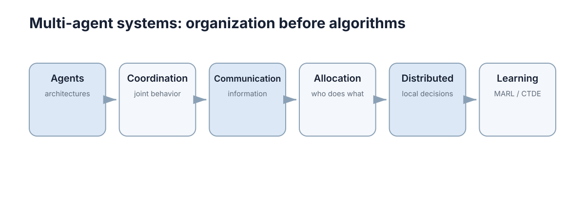

Multi-Agent Systems
多智能体系统（MAS）研究的不是"把单智能体程序复制若干份"，而是当多个决策者共享同一个环境、各自只有局部信息、且彼此的动作互相进入对方的回报时，系统应当怎样组织才不至于崩溃。本章的重点是机制与判据——Agent 怎么建模、协调靠什么、信息如何流动、任务归谁、学习如何避免互相拆台——而不是罗列 MARL 算法名字。

本节要解决的问题
单智能体 RL 的世界里，环境动力学 \(P(s'\mid s,a)\) 是稳定的：策略变了，世界不会跟着变。多智能体系统的第一层困难就是这个前提被破坏。设 \(n\) 个 Agent，联合动作 \(\mathbf a=(a_1,\dots,a_n)\)，则 Agent \(i\) 感受到的有效动力学是
等号右侧含其他 Agent 的策略 \(\pi_j\)，它们全都在学习、都在变。于是从 Agent \(i\) 的视角看，"环境"是一个持续移动的目标。这不是工程实现问题，而是问题结构本身的改变。
由此产生四个必须回答的问题：
- 组织结构：谁决策、谁只执行、决策在什么时间尺度上发生？
- 协调机制：多个动作同时发生冲突时，靠规则、靠协商、还是靠学出来的均衡来化解？
- 信息流：每个 Agent 只知道局部观测 \(o_i\)，谁该把什么信息发给谁，代价是多少？
- 归属与学习：任务与收益如何分配到具体主体，学习信号才不至于互相抵消？
这四个问题不能跳答，因为它们之间存在依赖：观测结构决定协调需要多少信息，信息可得性又决定分配能不能去中心化，而分配结果才是学习信号的定义基础。下表给出每一层被跳过时最先出现的症状，可作为诊断起点。
| 被跳过的问题 | 直接后果 | 最先出现的症状 | 该去哪里补 |
|---|---|---|---|
| 谁算 Agent（边界） | 决策权划分错误 | 算法调优无效、行为不可解释 | 01 架构 |
| 观测结构 \(\mathcal O_i\) | Agent 依据不足 | 换场景立刻失效、行为抖动 | 01 架构 |
| 协调机制 | 联合动作互相破坏 | 死锁、来回让行、冲突频发 | 02 协调 |
| 信息流设计 | 关键信息缺失 | 带宽升高但性能不升 | 03 通信 |
| 任务归属 | 资源错配 | 重复执行、任务无人认领 | 04 分配 |
| 信用分配 | 学习信号模糊 | 团队回报上升、个体行为退化 | 05 学习 |
本章不追求一次性给出标准答案，而是给出判据与失败模式：在具体系统里，你的失败出在哪一层，以及那一层应该用什么手段。
五章的推进逻辑
五章不是并列的知识清单，而是一条递进的依赖链：先确定"谁在决策"，才谈得上"怎么协调"；协调需要信息，所以下一步是通信；通信受限后分配问题变成分布式决策；最后才是让这些主体自己学。
| 章 | 核心问题 | 关键概念 | 上一章遗留的问题 |
|---|---|---|---|
| 01 智能体与架构 | 谁算 Agent、系统分几层 | MDP、Markov Game、Reactive/Deliberative/Hybrid | —— |
| 02 合作、竞争与协调 | 多主体动作如何不互相破坏 | 联合动作、均衡、协调失败 | 耦合由何而来 |
| 03 通信与信息共享 | 局部观测如何补全 | 消息、带宽、延迟、共享状态 | 协调需要哪些信息 |
| 04 任务分配与分布式决策 | 谁去做哪件事、在哪决定 | 分配目标函数、一致性、去中心化 | 信息在哪里可用 |
| 05 多智能体学习与 CTDE | 如何学而不互相拆台 | 非平稳性、信用分配、CTDE | 分配结果如何反馈成学习信号 |
推进逻辑中有一个不变的主线：耦合度。从"独立 Agent 各自决策"到"共享同一环境的完全耦合"，每往右一步，可分解性下降一级，单智能体方法能直接搬运的部分就少一块。因此读到任何一章，都值得先问：这一章处理的是耦合度多大的场景？
概念地图
上图从左到右六个节点，是一条从「个体」到「群体学习」的链路，每个节点都在回答上一个节点留下的缺口。
Agents / architectures——系统的最底层是"哪些组件被建模成决策者"。判据是它是否拥有自己的观测 \(o_i\)、动作 \(a_i\) 与目标 \(r_i\)。架构分三档：Reactive（观测到动作的直接映射，快但无规划）、Deliberative（维护内部世界模型并搜索动作序列，慢但可规划）、Hybrid（高层规划 + 低层反应 + 安全层）。
Coordination / joint behavior——一旦有多个决策者，个体最优不再等于整体最优。典型例子是两个 Agent 都选择"让对方先过"而同时僵住，或都选择"我先过"而相撞。协调要处理的是联合动作 \(\mathbf a\) 层面上的问题，而不是单个 \(a_i\)。
Communication / information——协调需要信息，而信息有代价。带宽、延迟、丢包决定了"能传什么"。消息可以是从局部观测里压缩出来的结论，也可以是共享的意图或计划；传得多则带宽吃紧、传得少则协调失败。
Allocation / who does what——信息到位后，才有条件回答"任务分给谁"。分配是组合优化问题：\(n\) 个 Agent、\(m\) 个任务，一对一指派就有 \(n!\) 种方案，必须依赖结构或近似算法。
Distributed / local decisions——分配结果最终要在本地执行。现实中往往没有中心节点，Agent 只能基于邻居信息决策，于是需要一致性机制与有限的迭代通信，还要面对通信中断时的降级行为。
Learning / MARL & CTDE——最右端是让整个系统自动获得策略。CTDE（集中训练、分散执行）是最常用的桥：训练时可以访问全局信息、允许信息互通，执行时每个 Agent 只用本地观测，从而在"学得动"和"跑得起"之间取一个折中。
链条的读法是：左侧节点定义问题的形状，右侧节点决定能不能自动求解。任何一层跳过，右侧都会建立在错误的结构上——例如没定义清楚观测，却直接上 CTDE，只会得到一个过拟合到训练时信息结构的策略。
把六个节点按"输入 / 输出"再排一次，能更清楚看到依赖方向：
| 节点 | 输入 | 输出（交给下一节点） | 对应章节 |
|---|---|---|---|
| Agents / architectures | 系统组件清单 | 决策者集合与分层结构 | 01 |
| Coordination | 各自的动作集合 | 联合动作的可行组合与冲突规则 | 02 |
| Communication | 各自需要但拿不到的信息 | 消息内容、频率与优先级 | 03 |
| Allocation | 任务集合与 Agent 状态 | 任务到 Agent 的指派 | 04 |
| Distributed | 指派结果与局部信息 | 各 Agent 的本地决策规则 | 04 |
| Learning | 上述全部结构 | 可自动优化的策略 | 05 |
注意最后一行：学习节点吃进去的是前面五个节点的结构假设。这也是为什么"换一个更强的 MARL 算法"经常解决不了问题——若观测结构本身不足，再强的算法也只能在错误信息上做最优拟合。
术语与符号约定
全章统一使用下面的符号，避免在不同章节之间产生歧义。多智能体的符号与单智能体最大的差别在于：几乎所有量都带上了主体下标，或者依赖他人的策略。
| 符号 | 含义 | 在 MAS 中的特殊性 |
|---|---|---|
| \(n\) | Agent 数量 | 直接决定联合空间规模 \(m^{n}\) |
| \(s\) | 全局状态 | 执行期通常没有任何单个 Agent 能完整观测 |
| \(o_i\) | Agent \(i\) 的局部观测 | 由观测函数 \(\mathcal O_i\) 生成，各 Agent 内容不同 |
| \(a_i\) | Agent \(i\) 的动作 | \(\mathcal A_i\) 可以对每个 Agent 不同 |
| \(\mathbf a\) | 联合动作 \((a_1,\dots,a_n)\) | 规模为 $\prod_i |
| \(\mathbf a_{-i}\) | 除 \(i\) 外的联合动作 | \(i\) 的回报依赖它，是耦合的直接体现 |
| \(r_i\) | Agent \(i\) 的奖励 | 完全合作时 \(r_i=r\)，竞争时可符号相反 |
| \(\pi_i\) | Agent \(i\) 的策略 | 他人策略 \(\pi_{-i}\) 进入 \(i\) 的有效动力学 |
| \(h_i\) | 历史 \(o_{i,0:t},a_{i,0:t-1}\) | 观测不足时用来推断隐藏状态 |
| \(b_i\) | 信念 \(P(s\mid h_i)\) | Dec-POMDP 中的充分统计量 |
| \(\gamma\) | 折扣因子 | 决定协调需要向前看多远 |
两个容易混淆的写法值得单独强调。第一，\(\pi_{-i}\) 不是"其他所有 Agent 合起来的一个策略"，而是一组各自独立的策略，因此它是一个联合策略而不是单一函数。第二，观测函数写作 \(\mathcal O_i\) 时下标在函数上，但真正的观测随机性来自环境状态与联合动作，所以 \(o_i\) 的信噪比会随队友行为变化——队友动作越剧烈，\(o_i\) 中包含的动态信息越多，静态信息相对越难提取。
常见失败模式速查
下面这张表用于现场定位：先看症状，再看最可能的层次，最后检查对应的设计项。经验上，绝大多数"算法不 work"的多智能体问题都能被前四行覆盖。
| 症状 | 最可能的层次 | 优先检查项 |
|---|---|---|
| 两个 Agent 僵持不动 | 协调 | 是否存在确定性的打破平局规则（如 ID 优先级） |
| 任务长期无人认领 | 分配 | 出价机制是否让这些任务产生负收益预期 |
| 回报曲线周期震荡、复现性差 | 学习 | 是否把仍在更新的他人策略当作目标（非平稳性） |
| 团队成功但个体行为退化 | 学习 | 是否有搭便车的 Agent，信用分配是否模糊 |
| 训练好、部署差 | 信息结构 | 执行期观测是否满足训练期假设（CTDE 常见坑） |
| 通信量升高但性能不升 | 通信 | 消息延迟 \(\tau\) 是否已超过决策周期 \(\Delta t\) |
| 路口反复急停 | 控制 / 安全层 | 反应式阈值 \(d_{safe}\) 与局部规划目标是否冲突 |
| Agent 数一增加就学不动 | 联合空间 | 是否仍在枚举 \(m^{n}\) 而没有做分解或参数共享 |
使用方式是"排除法"而不是"对症下药"：症状只提示层次，具体原因仍需回到对应章节的机制上验证。例如"回报震荡"可能是非平稳性，也可能只是超参数问题，区分判据是看震荡周期是否与对手策略的更新周期相关。
与其它章节的接口
MAS 不是一个孤立模块，它同时借用博弈论（多主体目标的数学语言）、分布式系统（在不可靠通信上做一致的工程手段）、单智能体 RL（学习机制）与机器人学（物理执行约束）。下表是主要的接口点：
| MAS 中的概念 | 用在哪一章 | 在那里解决什么问题 |
|---|---|---|
| 联合动作与收益矩阵 | 博弈建模 | 把"别人的动作影响我"写成可分析的形式 |
| Nash 均衡与最佳响应 | 最佳响应与 Nash 均衡 | 多主体策略不再变化时的稳定点是什么 |
| 重复博弈与学习动力学 | 重复博弈与学习 | 多轮交互中信任、报复与收敛如何出现 |
| MDP 与 Bellman 方程 | MDP 与 Bellman | 单主体价值迭代的基线，多主体的起点 |
| CTDE 与 Actor-Critic | 策略梯度与 Actor-Critic | 集中 critic 提供全局信号、分散 actor 执行 |
| 约束、鲁棒与离线 | Safe, Robust & Offline RL | 多 Agent 同时学习时的非平稳性进一步加剧 |
| 共识与一致性状态 | 一致性状态 | 无中心节点时状态如何收敛到一致 |
| QoS 与中间件 | 中间件 ROS2/DDS | 真实带宽、延迟、可靠性如何约束通信设计 |
| 路径与运动规划 | 路径与运动规划 | 协调与分配结果落地成可执行轨迹 |
接口方向是双向的：MAS 从博弈论拿模型语言，反过来把多主体约束（局部观测、通信受限、实时性）作为新条件反馈给博弈论与 RL；MAS 从分布式系统拿可靠性工程，反过来提出"参与者会理性选择策略"这一分布式系统通常不假设的条件。
单智能体到多智能体的新增困难
把单智能体算法复制 \(n\) 份是最容易犯的错误。下表列出新增的困难，以及为什么单智能体方法不能直接搬。
| 新增的困难 | 为什么单智能体方法搬不过来 |
|---|---|
| 非平稳环境 | 其他 Agent 的策略在变，同一个 \((s,a_i)\) 的回报分布不稳定，经验回放的数据会过期 |
| 联合空间指数增长 | $ |
| 信用分配 | 共享团队奖励时无法区分"关键贡献"与"恰好在场"，梯度信号被稀释 |
| 局部观测 | 每个 Agent 看到的是 \(o_i\) 而非真实的 \(s\)，需要记忆或通信补全 |
| 均衡而非最优 | 多主体系统中"最优动作"没有唯一含义，稳定点可能是均衡而非全局最优 |
| 通信耦合 | 策略与通信协议互相依赖，学习空间本身就是联合的 |
量化一下增长：\(m=3\) 时，\(n=5\) 得 \(243\) 种组合、\(n=10\) 得 \(59049\) 种、\(n=20\) 得 \(3.5\times10^{9}\) 种。若每个联合动作需要 1000 次采样才能可靠估计价值，\(n=20\) 就需要 \(3.5\times10^{12}\) 次交互——这条路径在物理系统上等于不可行，必须靠分解（独立 Q 学习）、结构（参数共享）或集中训练（CTDE）来绕开。
本章导航
- 智能体与多智能体系统架构：MDP 到 Markov Game，Reactive/Deliberative/Hybrid 架构选择，建模要素与系统边界判据。
- 合作、竞争与协调：联合动作与协调失败，合作/竞争/混合动机下的目标设置与均衡概念。
- 多智能体通信与信息共享：消息内容与压缩、带宽与延迟权衡、什么信息真正值得传。
- 任务分配与分布式决策：指派问题、一致性机制、去中心化的代价与降级策略。
- 多智能体学习与 CTDE：非平稳性应对、信用分配、集中训练分散执行的机制与失效边界。
阅读建议：若在做机器人系统，按 01 → 04 → 03 顺序读更顺；若在做学习算法，按 01 → 02 → 05 读，把通信与分配当作"学习之外的外生约束"看待。
下一步：从 智能体与多智能体系统架构 开始，先解决"谁算 Agent"与"系统分几层"的问题；需要数学基础时配合阅读 最佳响应与 Nash 均衡 与 MDP 与 Bellman。